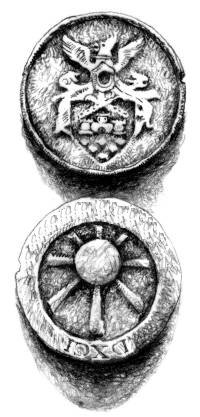
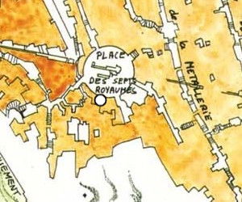

La Haute Guilde
Laelith a, comme beaucoup d'autres villes, vite comprit l'importance du commerce. Et même plus que beaucoup d'autres certainement, par nécessité, car la cité est bâtie sur une terre rude, avec pour conséquences que les cultures ne poussent pas et qu'il est pratiquement impossible d’élever des bêtes dans ces conditions. Toutes les denrées alimentaires sont donc importées. La survie même de la population dépend donc quasiment intégralement du bon fonctionnement du commerce entre la ville et l'extérieur, que ce soit avec ses provinces ou bien avec des nations étrangères. Heureusement, la politique visionnaire de la ville en ce domaine lui a apporté la prospérité. Laelith importe nombre de matières premières, mais la ville consomme énormément, travaille dur, et réussit finalement à exporter en grandes quantités nombres de biens manufacturés. L'activité commerciale est donc étroitement surveillée à Laelith, car stratégique, et les guildes nombreuses, car les affaires juteuses.
Un peu d'histoire
La Haute Guilde a été fondé en 891, mais son histoire est beaucoup plus ancienne. Elle commence avec la guilde des caravaniers des Deux Lacs, dont on trouve encore trace dans de vieux parchemins. Ce n'était à l'époque qu'une guilde parmi tant d'autres, mais avec le temps, et surtout grâce au concours des autorités de la ville, elle a su s'imposer comme leader et prendre une place prépondérante dans la vie économique et politique de la cité.
La guilde des caravaniers eu l'ingénieuse idée de coucher par écrit toutes les transactions qu'elle effectuait. Bien que beaucoup trouvèrent au début cette manière de faire trop formaliste, la guilde attira à elle de nombreux commerçants, car le fait de pouvoir prouver à l'aide d'un écrit quel était l'arrangement initial régla de nombreux conflits et inspira un sentiment de sécurité à nombre de négociants. Le succès s'amplifiant de jours en jours, les autorités mirent la main dessus et fondèrent la Haute Guilde. Grâce à son statut particulier et ses soutiens, la guilde réussit ensuite à signer de juteux accords, avec le matriarcat d'Olizya en premier lieu, en obtenant en 1103 l'exclusivité de ses productions joaillières, puis plus tard en 1148 avec la baronnie de Kaoca, en obtenant l'exclusivité d'importation de son chocolat. La guilde avait déjà gagné la confiance des marchands, elle obtint à ce moment la richesse. De guilde puissante elle se convertit en pouvoir central des guildes.
Activités
RELATIONS DANGEREUSES
La Haute Guilde entretient d'étranges relations avec la pègre de Laelith, et en particulier avec la plus puissante guilde d'assassins de la cité, le Poignard Sanglant. Ceux-ci servent de bras musclés à la Haute Guilde, éliminant les personnes qui se dressent face à elle ou qui n'acceptent pas ses règles. Des réunions secrètes ont fréquemment lieu au siège de la guilde entre les deux responsables.
En échange de ces services, la Haute Guilde utilise son pouvoir afin que les autorités ne se plongent pas trop sur les activités du Poignard Sanglant. Et afin que tout ceci ne dégénère pas, la Haute Guilde fixe des quotas aux assassins. Chacun y trouve ainsi son compte.
La Haute Guilde exerce aujourd'hui une autorité totale sur toutes les autres guildes commerciales de la cité (joailliers, armuriers, drapiers, tisserands, tailleurs, etc). Chaque semaine les responsables de ces guildes se réunissent au siège de la Haute Guilde pour y dresser le bilan financier de leurs activités, puis présenter leurs revendications et leurs doléances au maître de cette institution. Ensuite, ils débattent avec lui et ses conseillers des tarifs qui seront en vigueur pour la semaine suivante, établissant ainsi le cours des denrées.
L'organisation est aussi responsable des poids et des mesures en ville. Pour cela, quotidiennement, des agents de la Haute Guilde visitent commerces et marchés afin de vérifier les balances et les règles utilisées. Ces mêmes personnes ont également autorités pour, par exemple, goûter les bières et les vins, et sanctionner les commerçants si la qualité offerte est vraiment trop mauvaise ou n'est pas adaptée aux prix pratiqués.
La Haute Guilde propose aussi aux marchands un service plutôt singulier : une assurance indemnisant les propriétaires si jamais ils sont attaqués sur les routes du royaume. L'institution rembourse dans ce cas la totalité des biens dévalisés. Le coût de cette assurance peut paraître exorbitant (10% du prix total de la cargaison), mais l'histoire montre que les caravanes assurées sont beaucoup moins fréquemment pillées par les voleurs et les brigands de grands chemins que les autres. L'efficacité de cette assurance reste un mystère car les caravanes assurées ne disposent même pas d'un supplément d'escorte par rapport aux autres.
Obligations
Lorsqu'un marchand arrive à Laelith, il a pour obligation de se rendre au siège de la Haute Guilde pour déclarer les marchandises qu'il désire mettre en vente dans la cité sainte. Ses biens sont alors soumis à un examen méticuleux de la part d'experts dépêchés par la Haute Guilde, de manière à évaluer la quantité et la qualité des marchandises. Les cours officiels en vigueur sont ensuite annoncés au marchand. Celui-ci est libre de ne pas les respecter, mais il est recommandé de ne pas le faire trop ouvertement car la Haute Guilde n'aime pas que l'on conteste son autorité. Le code civil et commercial de Laelith regorge de paragraphes et d'alinéas pouvant anéantir les ambitions trop gênantes d'un marchand bafouant excessivement ces règles. De nombreux antécédents existent et toutes les condamnations (amende ou confiscation) pour infractions que l'on trouve dans les archives, plus ou moins justifiées suivant les cas, démontrent que le pouvoir de la Haute Guilde n'est pas surfait.
Revenus
Outre les fructueuses assurances, le Haute Guilde possède d'autres moyens de financement. En premier lieu, chaque année les guildes ayant recours à ses services doivent s'acquitter d'une cotisation fixée à 2,5% de leur chiffre d'affaire. De plus, il arrive souvent que certains dossiers épineux soient réglés avec espèces sonnantes et trébuchantes. Enfin, l'intégralité des taxes et amendes en relation avec les lois commerciales sont reversées à la Haute Guilde. Tout ceci fait de cette institution la plus riche de la ville.
Exemples de taxes
- 1 pa pour tout marchand ambulant, non installé à Laelith donc (droit d'activité pour 1 semaine et limité à une seule rue ou échelle, remise d'un reçu daté)
- 1 po sur la vente de toutes armes comportant du métal et de taille égale ou supérieure à une épée courte
- 1 po pour tout chariot entrant ou sortant de l'enceinte de la cité (vide ou plein)
- 5 po pour tout bateau accostant sur les quais (seuls sont exonérés les bateaux de pêche)
Politique
Découvrez la Haute Guilde en jouant en ligne l'aventure solo « le traité d'Agramor ».
Pièce maîtresse de l'économie de la cité, la Haute Guilde entretient des rapports très étroits avec les autorités de Laelith. Son responsable est nommé par le conseil du Roi-Dieu, et celui-ci assiste à toutes les réunions de ce conseil. L'actuel maître est Gildas d'Elnor, qui dirige la guilde d'une main de fer depuis plusieurs années. Théoriquement soumis à l'autorité du grand prêtre du temple du Poisson d'argent, responsable du commerce et des taxes, cette allégeance est en réalité illusoire et Gildas rend compte au Roi-Dieu en personne. À noter qu'un décret autorise la Haute Guilde à faire appel à la garde en cas de problème pour faire appliquer ses décisions. Véritable état dans l'état, elle dispose donc d'une autorité absolue dans son domaine, et semble désormais indéboulonnable.
Le siège
Imposant ouvrage de marbre s'élevant sur trois niveaux, le siège de la Haute Guilde se situe au cœur de la terrasse de la Main qui travaille, sur la place des Sept Royaumes. Toutes les fenêtres du bâtiment sont munies de barreaux d'acier qui empêchent toute effraction. Les portes sont toutes en chêne massif renforcées par des ferrures.
C'est dans sa cour centrale que les experts nommés par les représentants des différentes guildes de Laelith évaluent les différentes marchandises entrées dans la cité sainte.
Au rez-de-chaussée se trouvent la conciergerie et la réception, où les nouveaux venus peuvent obtenir tous les renseignements concernant les processus à suivre ou bien souscrire une assurance ou un prêt, le poste de garde de la Haute Guilde, et l'entrepôt où sont entreposés tous les biens donnés en gage pour des prêts souscris à la Haute Guilde. C'est là également que les archives, centre névralgique de l'institution, sont conservées. Il s'agit de la totalité des documents comptables ainsi que les duplicata des contrats passés entre la guilde et les marchands durant les 5 dernières années. Enfin, le rez-de-chaussée accueille également la grande salle où se réunissent chaque semaine les chefs des guildes corporatistes.
Au premier étage logent et travaillent les comptables de la guilde, tandis que le second étage est réservé au maître de la guilde et à sa garde privée. On y trouve entre autres son bureau personnel, dans lequel Gildas se retire parfois pour prendre quelques moments de repos, aux côtés d'un énorme coffre-fort qui contient toutes les cotisations des adhérents de la guilde. Une pièce secrète à ce dernier étage renferme également les archives secrètes de la guilde, les papiers les plus importants comme les reconnaissances de dettes, ainsi que certains dossiers compromettants. Le maître de la guilde est le seul à posséder la clé qui donne accès à cette pièce.
Sécurité
Une petite garnison de 14 gardes dirigée par Gunther d'Armélie veille sur la Haute Guilde jour et nuit, les hommes se relayant toutes les douze heures. Quatre sont en permanence au poste de garde à l'entrée, un autre monte la garde devant la porte de la salle des archives, un surveille l'entrepôt et un dernier patrouille entre le rez-de-chaussée et le premier étage. Le reste de la troupe, pendant ce temps, se repose dans un dortoir prévu à cet effet. Gunther dispose d'ailleurs d'une petite chambre personnelle au premier étage. Il est obligatoire de laisser ses armes à l'entrée du bâtiment.
En plus de ces gardes réguliers sous l'autorité de l'Ezmer de la terrasse de la Main qui travaille, le maître de la Haute Guilde dispose de sa propre garde personnelle. Il s'agit de 5 guerriers d'élites, logeant au deuxième étage du bâtiment, qui ont eux pour responsabilité non pas la protection de l'édifice, mais celle du maître des lieux. Leur chef se nomme Ergalth.
Personnalités
Gildas d'Elnor
Gildas d'Elnor. À 46 ans, cet ancien marchand de la Main qui travaille est aujourd'hui le maître de la Haute Guilde, un titre fort convoité. Gildas est un véritable génie pour tout ce qui concerne le commerce. Habile négociateur, d'un tempérament calme, c'est une personne très influente à Laelith, donc jalousée par beaucoup. C'est la raison pour laquelle il ne se déplace jamais sans au moins deux gardes du corps. On ne lui connaît aucun vice. Et malgré son pouvoir, d'Elnor ne se sert pas de sa position professionnelle pour s'enrichir personnellement. Il répugne ceux qui le font. Il entretiendrait une relation amoureuse avec une très jolie baronne de la Haute Terrasse, où il possède par ailleurs plusieurs appartements qu'il loue. Lui vit à la Haute Guilde, sur la place des Sept Royaumes, comme la majorité des personnes qui y travaillent. Son unique point faible est peut-être son jeune fils de onze ans qui vit avec lui. La mère de l'enfant est morte il y a plusieurs années de cela, d'une maladie rare, lors d'un voyage en Amn.
Ergalth
Ergalth. Ce demi-elfe, ancien assassin à la guilde du Poignard Sanglant, s'est racheté une conduite il y a quatre ans, et est aujourd'hui le meilleur des 5 gardes du corps du maître de la Haute Guilde, Gildas d'Elnor. Cet homme de 1,78 mètre, très grand pour un demi-elfe, exécute son travail à la perfection et de manière très professionnelle. Extrêmement loyal, il a gagné au fil du temps toute la confiance de Gildas, et joue même de temps en temps le rôle de confident. Rien ne l'effraye et il manie toutes les armes à la perfection, l'arc, la dague et l'épée à deux mains étant tout de même ses favorites. Il a également toujours quelques doses de poison sur lui. Comme tous les gardes du corps de la Haute Guilde, il porte une demi-plate noire et loge à la Haute Guilde. Il possède un gros tatouage sur son bras droit, et on ne lui connait aucune famille, ni aucune relation sentimentale.
Caldis « le pointilleux »
Caldis « le pointilleux ». C'est le chef comptable de la Haute Guilde. Caldis est né en Azilian dans une famille de riche marchands. Aux alentours de quatorze ans il est venu à Laelith étudier à l'université, où il s'est fait remarquer comme l'un des tous meilleurs élèves. Caldis possède un don exceptionnel pour le calcul mental et une mémoire prodigieuse, ce qui l'amène à ne conserver pratiquement aucune trace écrite et à tout retenir par cœur. Il porte sur lui en permanence une fiole de poison, au cas où un jour quelqu'un essayerait de le faire parler, et a une petite tendance à la paranoïa. Son tic qui lui fait cligner des yeux toutes les deux ou trois secondes peut devenir irritant à la longue. Il possède toujours de la famille en Azilian, et cela contribue certainement à maintenir de bonnes relations entre cette province et la cité. Veuf lui aussi (sa femme a été assassinée par un inconnu il y a bientôt 10 ans), et sans enfant, il vit maintenant en célibataire.
Gunther d'Armélie
Gunther d'Armélie. C'est le rahel du poste de garde chargé de la protection de la Haute Guilde et de la place des Sept royaumes. Il est sous le commandement de l'Ezmer de la terrasse de la Main qui travaille, et ne reçoit donc pas ses ordres de Gildas. Natif de Laelith et issu d'une vieille famille de militaires, il a été formé à la vieille école. Il possède une loyauté sans faille vis à vis de ses supérieurs, mais ne s'entend pas du tout avec Ergalth, dont il connaît le passé d'assassin, et les autres gardes du corps du maître de la Haute Guilde, les considérant comme des mercenaires fanatiques et dangereux pour la population de la cité. Désireux de mourir au combat comme son père, il fait preuve d'une fascinante témérité face au danger. Il porte une armure de plaque et une épée longue.
Bofal
Bofal. Ancien conservateur de la Bibliothèque Matérialiste Universelle, ce gaillard rondouillard est le chef des trois archivistes de la Haute Guilde. Exubérant et volontiers farceur, Bofal est de ceux qui mettent un peu d'ambiance dans une institution qui sans lui serait terriblement austère. Il n'est intéressé ni par les richesses, ni par la violence, et se contente des repas et du gîte pour tout salaire. Obsédé par l'ordre et le classement, il se met parfois dans des colères noires quand il découvre quelque chose qui n'est pas à sa place.